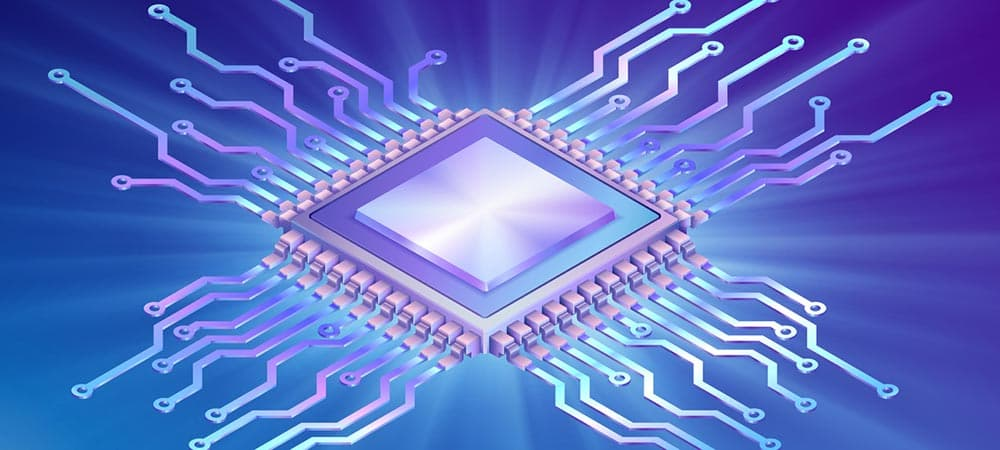

Hier ga ik specifieker in op het onderwerp de operating system.
. De Central Processing Unit (CPU), oftewel de processor, is het hart van iedere computer, smartphone of IoT-apparaat. Een operating system oftewel het besturingssysteem, is een programma dat na het opstarten van een computer in het geheugen geladen wordt en dat de functionaliteiten aanbiedt om andere programma's uit te voeren. Deze andere programma's worden applicaties of toepassingen genoemd. De applicaties maken gebruik van het besturingssysteem via een bepaalde Application Program Interface (API). Daarnaast kunnen gebruikers rechtstreeks communiceren met het besturingssysteem via een user interface, zoals een commando taal. Alle computer platformen (hardware en software) hebben een besturingssysteem nodig.
